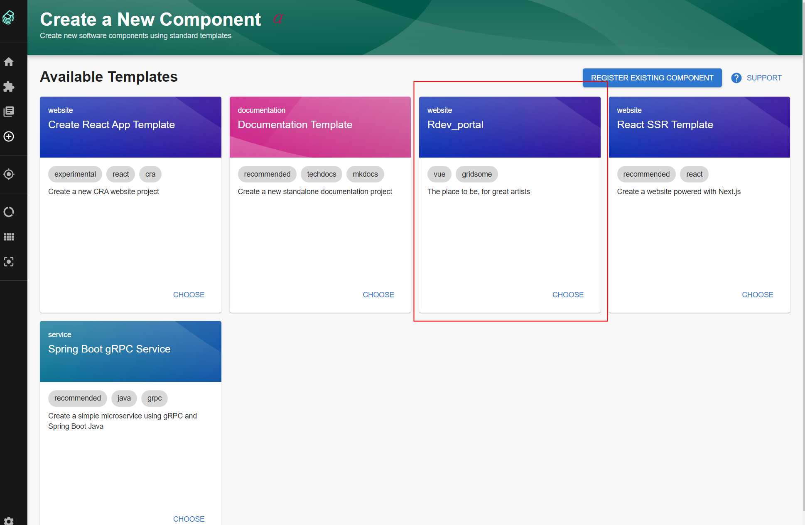
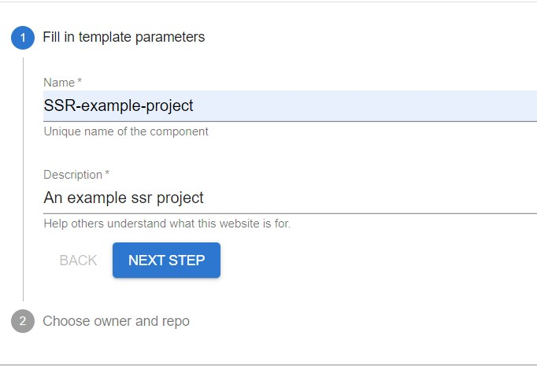
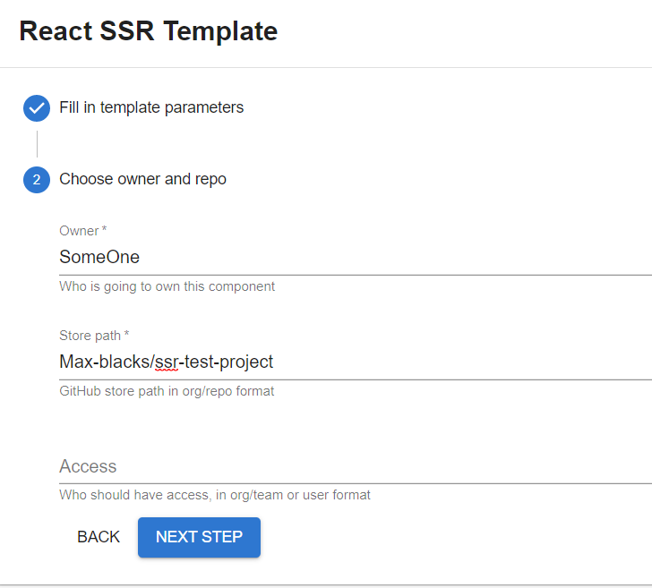
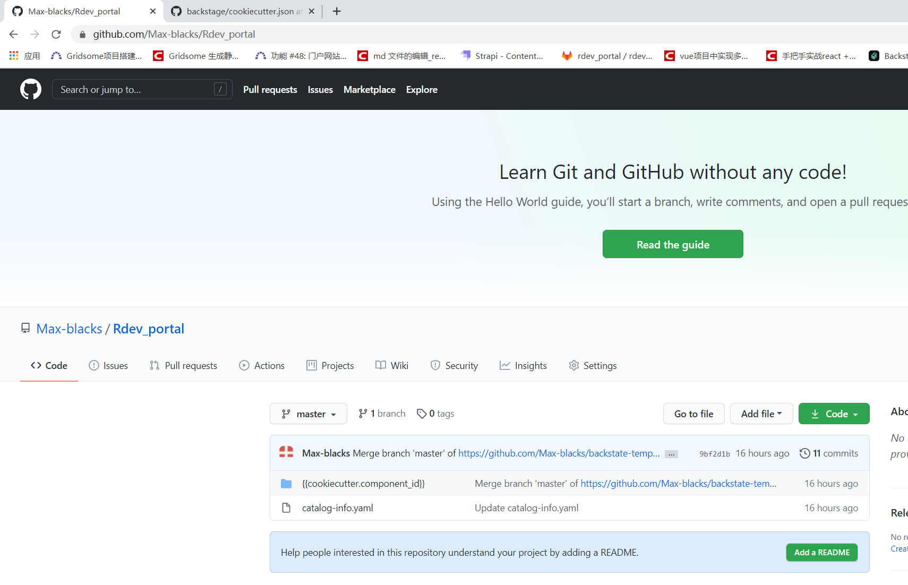
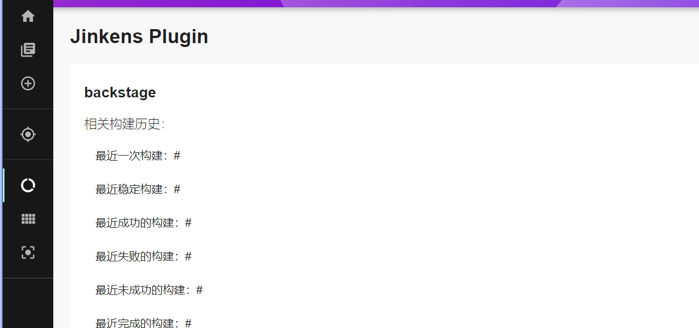

Welcome to Backstage
Backstage 开发者平台
Backstage开发新项目流程
环境准备：
- backstage开发者平台
- https的gitlab
- Jenkins
- sonarqube
- k8s集群
开发新项目
理论支撑： 基于已有的门户网站（例：rdev_portal）为模板新建一个web应用（SSR-example-project）构建并部署的过程。
一、新建web（SSR-example-project）网站
进入创建模板菜单：点击“create a New Component”

选择已存在模板
方法1：选择配置中已存在的模板

点击“CHOOSE” 进入创建新项目流程：
(1).Fill in template parameters
1. 填写名称name：SSR-example-project
2. 点击“NEXT STEP”

(2).Choose owner and repo
1. 填写“Owner” （使用者身份）
2. 填写“Store path” （gitlab上新项目路径：ssr-test-project为新生成项目，此路径不能是已存在的）

(3).Review and create
1. 点击“CREATE”

(4).Create component
1. 创建需要时间，请等待......


(5).Create component success
在gitlab上生成了新的（SSR-example-project）工程

方法2：注册在gitlab已存在的模板
例如：https的gitlab上已有门户网站代码（rdev_portal）
代码目录：

yml示例：

(1). 选择register exsiting component

(2). 填写url
（rdev_portal的yml路径：https://github.com/Max-blacks/Rdev_portal/blob/master/catalog-info.yaml）
 接下来步骤同方法1，在gitlab上生成了新的（SSR-example-project）工程
接下来步骤同方法1，在gitlab上生成了新的（SSR-example-project）工程
二、生成新项目的doc
在backstage的doc菜单，点击“doc”，
能看到刚刚新建的（SSR-example-project）的doc文档，

点击进入详情：
详情包含：此模板被使用的信息（被使用计数显示，谁使用者信息）

三、Jenkins任务
- 在backstage的Jenkins菜单，点击“创建”任务，为（SSR-example-project）新建task，

- 点击此task能看到详情，创建错误可以删除

- 配置SSR-example-project任务的configuration，关联gitlab和sonarqube。
四、在gitlab查看（SSR-example-project）
- Backstage的gitlab菜单，能看到（SSR-example-project）信息（包括clone地址）

- 开发者对（SSR-example-project）项目进行修改，提交commit，Backstage的gitlab里面（SSR-example-project）的详情：可以看到commit的开发者，commit的次数，reviewer等
五、Jenkins构建
- 在开发者提交commit后，在backstage的Jenkins菜单里，（SSR-example-project）任务可以看到构建状态，
- 构建成功->部署，构建失败->点击查看日志
六、部署
构建成功后在k8s上可以看到（SSR-example-project）部署的信息